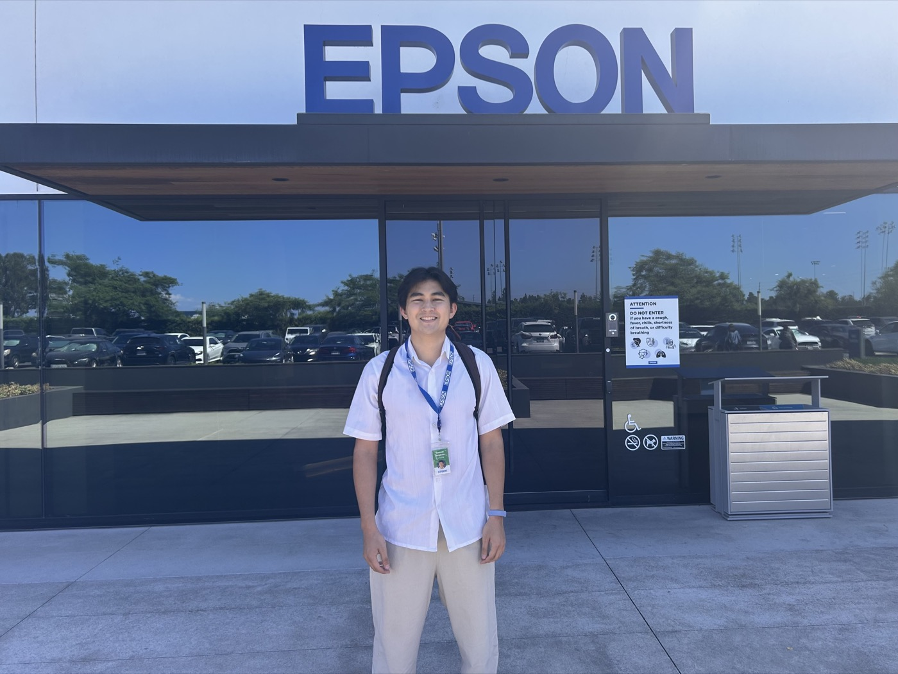

Epson: Marcomm LATAM Intern
Commercial Marketing Intern, Regional Strategic Marketing
June–August 2026 (8 weeks) · Hybrid, Epson Headquarters, Los Alamitos, CA

I interned on Epson Latin America's Regional Strategic Marketing team, supporting marketing operations across three product lines: System Devices (SD), SIDM (Serial Impact Dot Matrix printers), and ColorWorks (on-demand color label printers) for Latin America and the United States. The role sat at the intersection of Product Management, Marcom, and Web, keeping the marketing content and tools that support sales aligned and current.
What I Worked On
- Partner Portal content management: Supported the update and maintenance of Epson's Partner Portal so marketing assets, product documentation, sales tools, and promotional materials stayed accurate and current, and improved how commercial resources were organized for channel partners across the region.
- Marketing content review and standardization: Reviewed and updated datasheets, brochures, customer success stories, infographics, and sales presentations across the SD, ColorWorks, and SIDM lines, helping keep messaging, branding, and product information consistent.
- Regional website content audits: Ran comprehensive audits of the SD, ColorWorks, and SIDM websites to verify brochures, videos, product specs, images, and syndicated content were accurate and complete, flagging outdated materials and gaps to Product Management, Marcom, and Web.
- Cross-functional marketing coordination: Worked closely with Product Managers, Marcom, Web, and regional stakeholders to support content updates and digital marketing initiatives, and coordinated follow-up so fixes actually shipped on time.
- Regional product launch support: Supported marketing execution for product launches and webinars, including preparation of commercial materials, localization, content organization, and operational coordination for regional events.
Beyond the Internship: Building a LATAM Marcomm Playbook
Running the same content audits and localization reviews week after week surfaced the same handful of problems over and over: inconsistent terminology across languages, files that didn't follow a predictable naming pattern, and no shared checklist for what "ready to publish" actually meant. On my own initiative, I put together a LATAM Marcomm Playbook: a framework proposing standards for the parts of the content pipeline that kept causing rework. The goal wasn't to document what Epson already does, it was to propose a system that closes the gaps I was seeing firsthand.
- Terminology and style standards: A trilingual (EN / ES-LATAM / PT-BR) glossary with a "do not use" column for known mistranslations, one canonical term per concept, and per-market voice notes so tone stays consistent without flattening it.
- File and asset naming convention: A standard filename schema (product line, code, asset type, language, version, date) plus version rules and a draft-vs-final convention so nothing shipped gets overwritten.
- Localization workflow: A pre-translation checklist, a standard handoff template, and a QA checklist run on every proof, catching the errors (missing footnotes, mismatched specs, dropped models) that had shipped before.
- Launch playbook: A launch brief template and standard asset checklist mapped to a timeline working backward from launch day, from EN source lock at T-8 weeks through partner comms and Partner Portal go-live on launch day.
- Partner Portal standards: A content taxonomy for tagging and searching assets, an update cadence for quarterly and ad hoc audits, and retirement rules for discontinued or superseded materials.
- Tooling and automation opportunities: A scoped-out list of multipliers on top of the core playbook, including shared glossary tooling, LLM-assisted first-pass QA, templated asset generation, and Partner Portal automation.
Skills & Tools
- Marketing operations, digital asset management, and content lifecycle management across multiple product lines and a regional (LATAM) market
- Website content auditing and sales enablement
- Excel for tracking content audits and marketing data
- SQL for pulling and querying product and sales data
- Salesforce for marketing and sales coordination
- Adobe, PowerPoint, and SharePoint for reviewing, editing, and organizing marketing assets
- Cross-functional coordination across Product Management, Marcom, and Web teams